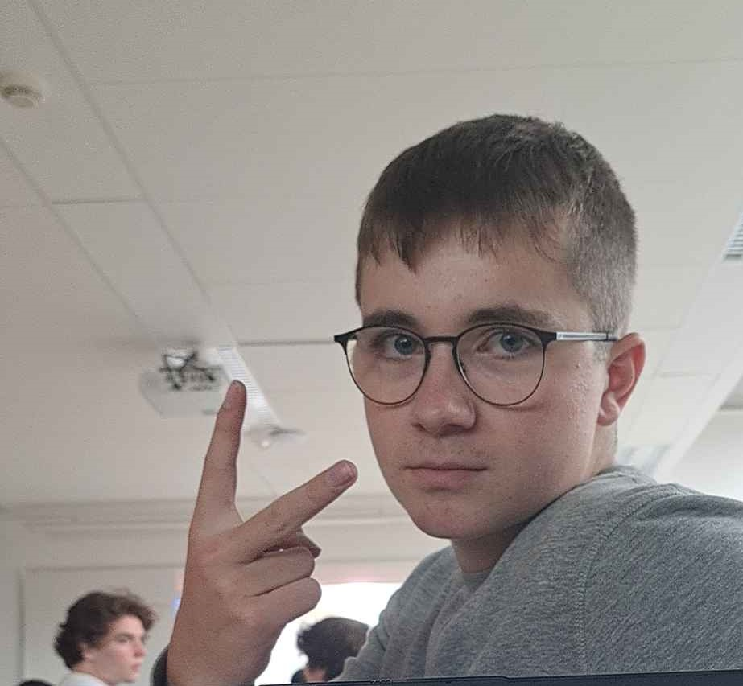
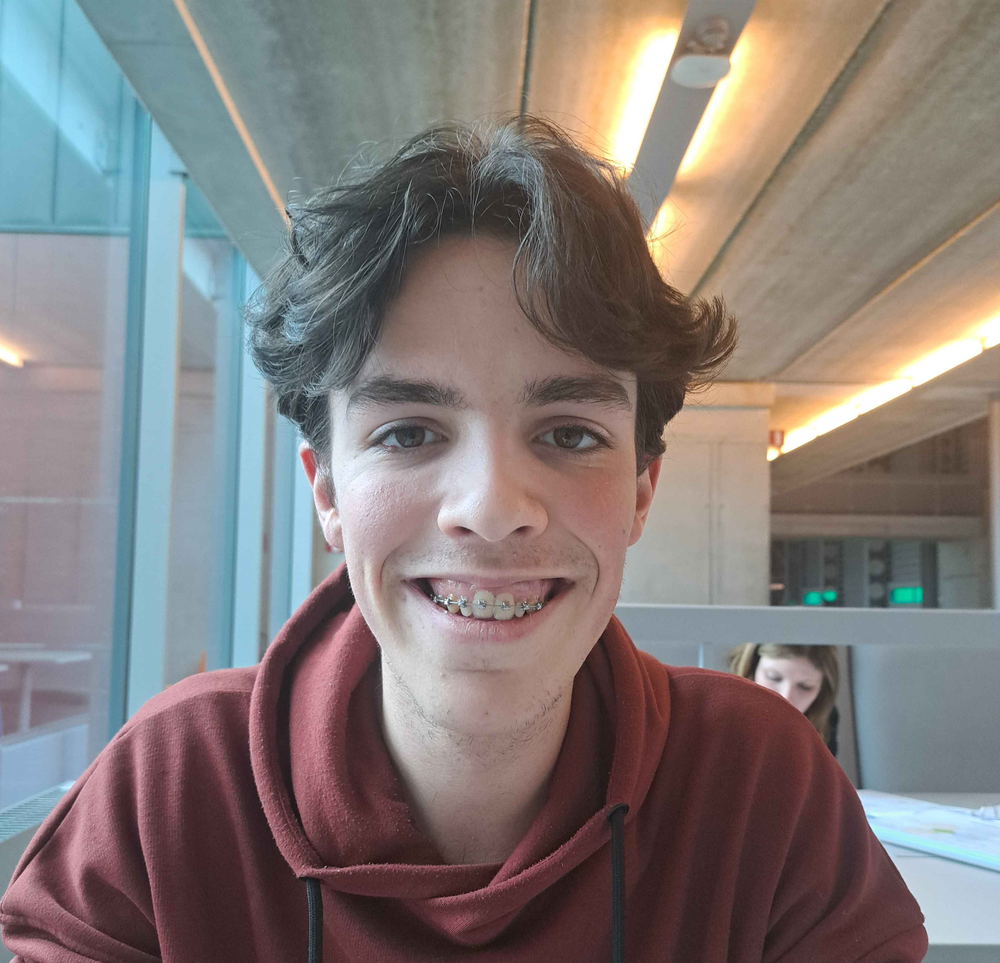

Over Ons
Welkom! Wij zijn Joe, Joren, en Simon, de oprichters van IoTforClimate.
Onze missie is om slimme IoT-oplossingen te creëren die bijdragen aan een schonere, duurzamere planeet.

Joe Boone

Joren Vandewalle

Simon Stijnen